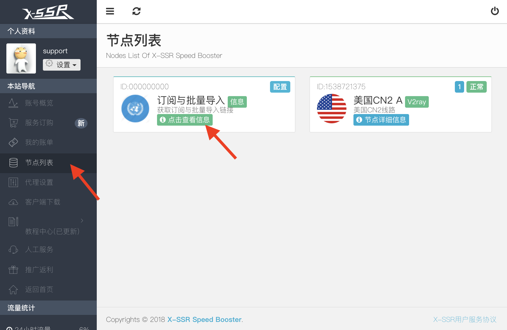
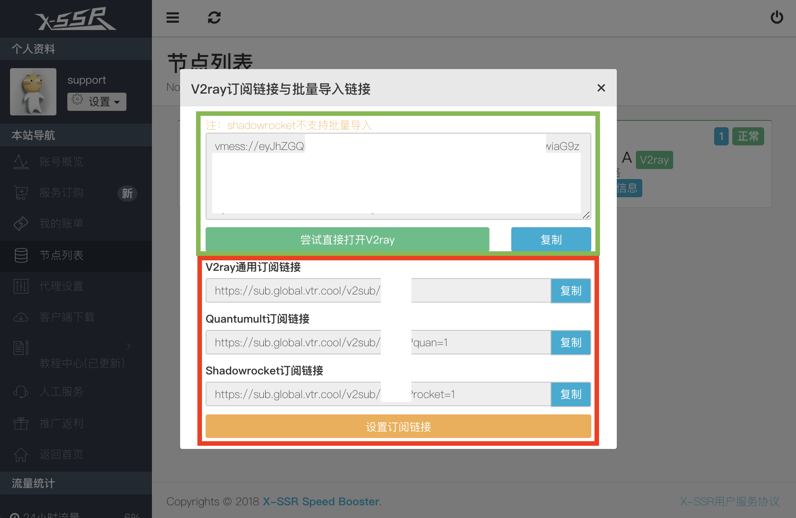
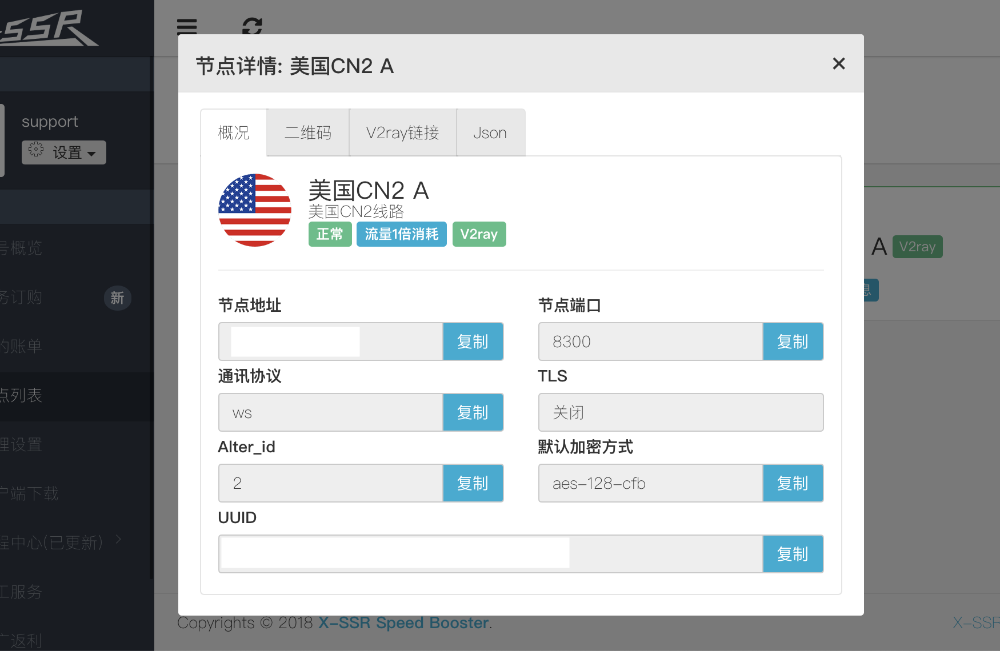

基础使用教程
4、获取配置
请进入节点列表获取您的节点信息。订阅与批量导入可以导入您所拥有的所有节点，之后的每一个节点的节点详细信息您可以获取每一个节点的具体的连接信息。下图只是一个测试账号，所以只有一个节点，实际上我们已经拥有25个（或以上）个节点，您登录账号之后即可看见。
如图，绿色的框是批量导入链接。但是目前支持批量导入的客户端较少。红色框里面的订阅链接。目前，Vmess总共有三种订阅的格式，所以在这里提供三种订阅链接，请按需选择。
下图是单个节点的详细信息。在这里，我们提供每一个节点的具体链接信息，以及节点的连接二维码还有Vmess链接（V2rayN标准）以及适配这个节点的Json客户端配置文件。